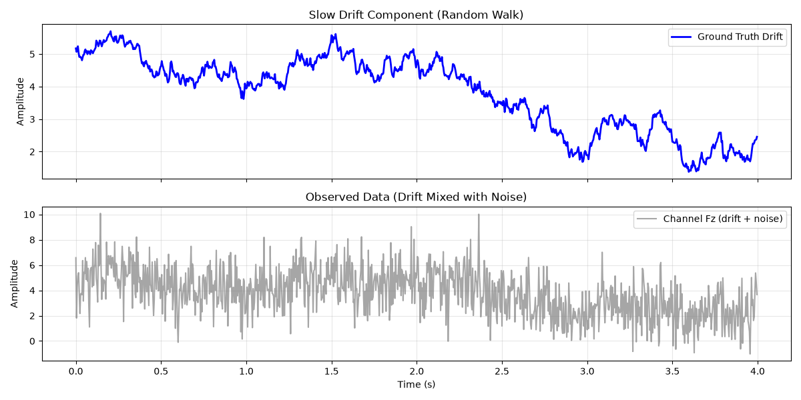
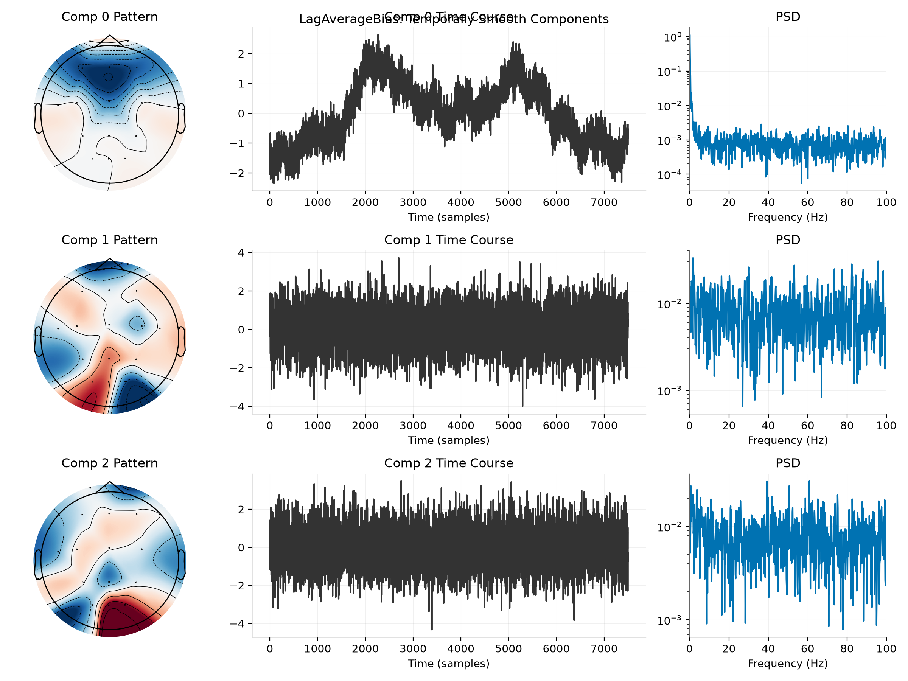
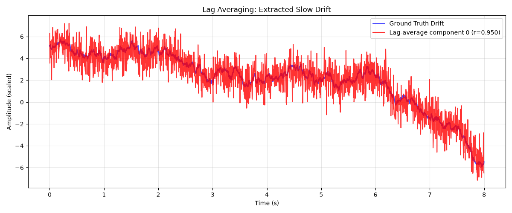
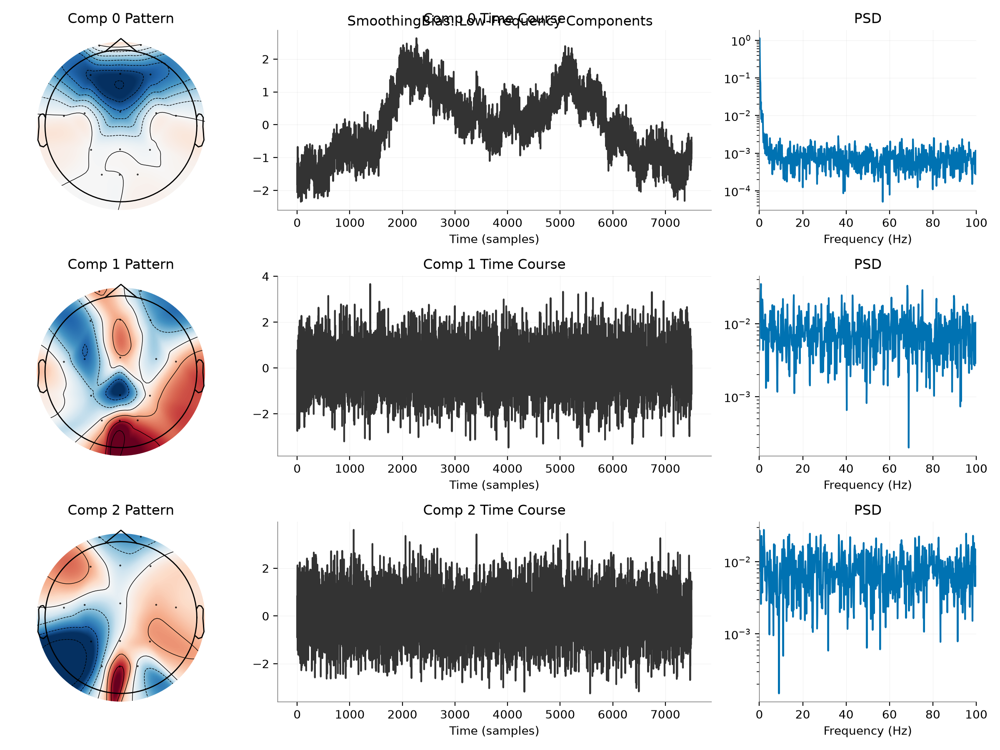
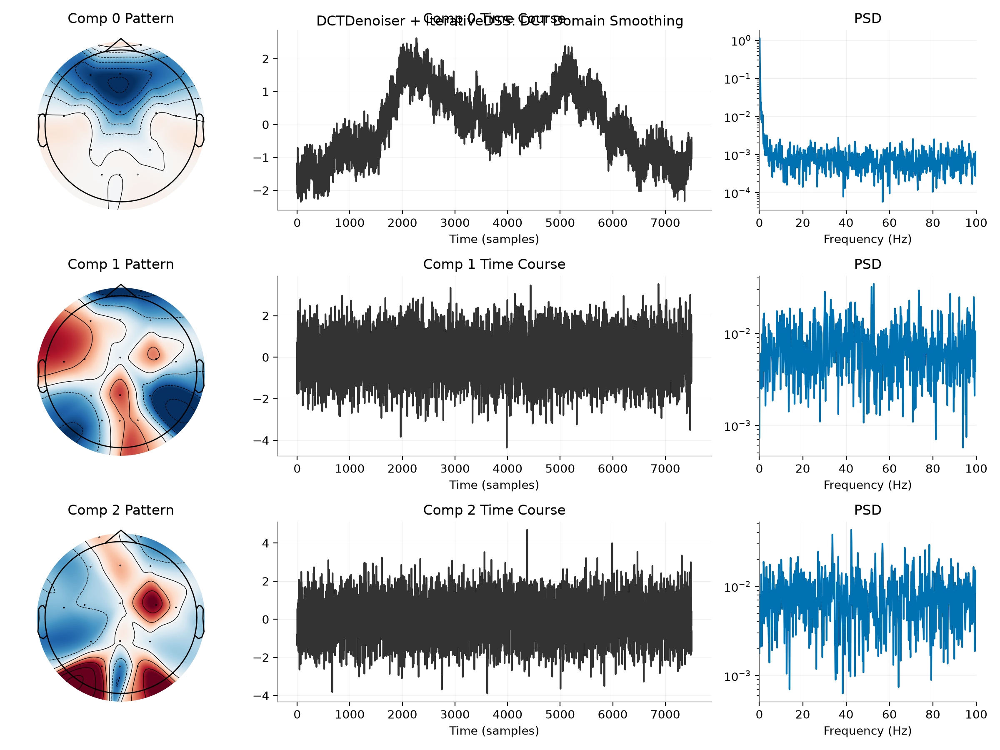
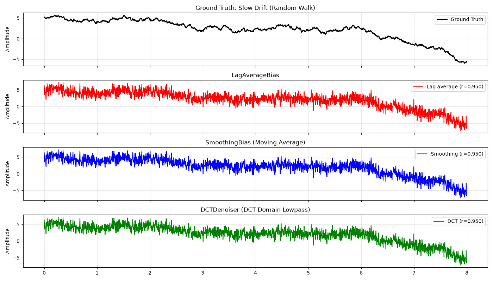
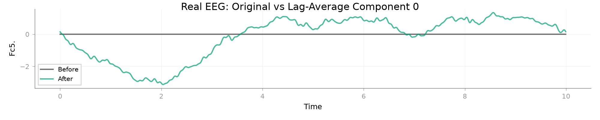
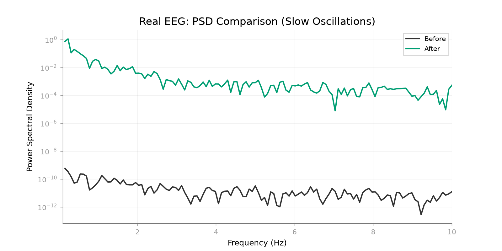

Note
Go to the end to download the full example code.
Temporal Biases for Ordinary DSS#
This example demonstrates DSS for extracting temporally structured signals: autocorrelated components, slow drifts, and smooth waveforms.
These ordinary-DSS bias operators do not perform lag-space TimeShiftDSS.
Here LagAverageBias and SmoothingBias act on ordinary DSS data, whereas
TimeShiftDSS augments repeated trials with an explicit lag grid.
We cover both linear biases (LagAverageBias, SmoothingBias) and nonlinear denoisers (DCTDenoiser).
The examples move from synthetic slow drifts to lag-averaging and smoothing biases, then to DCT-based iterative denoising and a real EEG slow-potential example.
Imports#
import matplotlib.pyplot as plt
import mne
import numpy as np
from scipy import signal
from mne_denoise.dss import DSS, IterativeDSS
from mne_denoise.dss.denoisers import (
DCTDenoiser,
LagAverageBias,
SmoothingBias,
)
from mne_denoise.dss.variants import smooth_dss
from mne_denoise.viz import (
plot_channel_time_course_comparison,
plot_component_summary,
plot_psd_comparison,
)
Part 0: Synthetic Slow Drift (Random Walk)#
Simulate slow cortical potentials: random walk + white noise
print("--- Part 0: Synthetic Slow Drift ---")
rng = np.random.default_rng(42)
sfreq = 250 # Hz
n_seconds = 30
n_times = n_seconds * sfreq
n_channels = 16
times = np.arange(n_times) / sfreq
# 1. Slow Drift (Random Walk - integrates white noise)
drift_seed = rng.normal(0, 0.05, n_times)
drift = np.cumsum(drift_seed) # Random walk
drift = signal.detrend(drift) # Remove DC
drift *= 2.0 # Scale
# 2. Fast Noise (White)
noise = rng.normal(0, 1.5, (n_channels, n_times))
# 3. Mix: First 4 channels get the drift
data = noise.copy()
data[:4] += drift * np.array([[1.0], [0.8], [0.6], [0.4]])
print(f"Simulated {n_channels} ch × {n_seconds}s with slow drift in first 4 channels")
# Create MNE Raw with montage
ch_names = [
"Fz",
"F3",
"F4",
"Cz",
"C3",
"C4",
"Pz",
"P3",
"P4",
"Oz",
"O1",
"O2",
"Fp1",
"Fp2",
"T7",
"T8",
]
info_sim = mne.create_info(ch_names, sfreq, "eeg")
montage = mne.channels.make_standard_montage("standard_1020")
info_sim.set_montage(montage)
raw_sim = mne.io.RawArray(data, info_sim)
# Visualize time series
fig, axes = plt.subplots(2, 1, figsize=(12, 6), sharex=True)
t_plot = times[:1000] # First 4 seconds
axes[0].plot(t_plot, drift[:1000], "b", linewidth=2, label="Ground Truth Drift")
axes[0].set_title("Slow Drift Component (Random Walk)")
axes[0].set_ylabel("Amplitude")
axes[0].legend()
axes[0].grid(True, alpha=0.3)
axes[1].plot(
t_plot, data[0, :1000], "gray", alpha=0.7, label="Channel Fz (drift + noise)"
)
axes[1].set_title("Observed Data (Drift Mixed with Noise)")
axes[1].set_xlabel("Time (s)")
axes[1].set_ylabel("Amplitude")
axes[1].legend()
axes[1].grid(True, alpha=0.3)
plt.tight_layout()
plt.show()

--- Part 0: Synthetic Slow Drift ---
Simulated 16 ch × 30s with slow drift in first 4 channels
Creating RawArray with float64 data, n_channels=16, n_times=7500
Range : 0 ... 7499 = 0.000 ... 29.996 secs
Ready.
Part 1: Lag-averaging bias#
Lag averaging emphasizes components that remain similar across time lags.
print("\n--- Part 1: Lag Averaging ---")
# Explicit lag-averaging bias
bias_tsr = LagAverageBias(lags=10, weighting="uniform")
dss_tsr_manual = DSS(n_components=5, bias=bias_tsr)
dss_tsr_manual.fit(raw_sim)
print(f"Manual DSS Eigenvalues: {dss_tsr_manual.eigenvalues_[:5]}")
# Visualize the explicit DSS-plus-bias configuration
plot_component_summary(
dss_tsr_manual,
data=raw_sim,
info=raw_sim.info,
picks=np.arange(len(raw_sim.ch_names)),
n_components=3,
show=False,
)
plt.gcf().suptitle("LagAverageBias: Temporally Smooth Components")
plt.show()

--- Part 1: Lag Averaging ---
Manual DSS Eigenvalues: [0.90540147 0.1162555 0.11485271 0.11248996 0.11043523]
Compare first component with ground truth
sources_tsr = dss_tsr_manual.transform(raw_sim)
comp0_tsr = sources_tsr[0]
# Flip if negatively correlated
if np.corrcoef(comp0_tsr, drift)[0, 1] < 0:
comp0_tsr *= -1
corr_tsr = np.corrcoef(comp0_tsr, drift)[0, 1]
print(f"\nCorrelation with ground truth drift: {corr_tsr:.3f}")
# Plot comparison
plt.figure(figsize=(12, 5))
t_zoom = times[:2000] # First 8 seconds
plt.plot(t_zoom, drift[:2000], "b", linewidth=2, label="Ground Truth Drift", alpha=0.7)
plt.plot(
t_zoom,
comp0_tsr[:2000] * (np.std(drift) / np.std(comp0_tsr)),
"r",
linewidth=1.5,
label=f"Lag-average component 0 (r={corr_tsr:.3f})",
alpha=0.8,
)
plt.xlabel("Time (s)")
plt.ylabel("Amplitude (scaled)")
plt.title("Lag Averaging: Extracted Slow Drift")
plt.legend()
plt.grid(True, alpha=0.3)
plt.tight_layout()
plt.show()

Correlation with ground truth drift: 0.950
Part 2: Temporal Smoothing (SmoothingBias)#
Emphasizes low-frequency temporal structure via smoothing
print("\n--- Part 2: Temporal Smoothing ---")
# Manual SmoothingBias
bias_smooth = SmoothingBias(window=50) # 50 samples = 200ms at 250Hz
dss_smooth_manual = DSS(n_components=5, bias=bias_smooth)
dss_smooth_manual.fit(raw_sim)
print(f"Manual Smoothing Eigenvalues: {dss_smooth_manual.eigenvalues_[:5]}")
# Wrapper
dss_smooth_wrapper = smooth_dss(window=50, n_components=5)
dss_smooth_wrapper.fit(raw_sim)
print(f"Wrapper Eigenvalues: {dss_smooth_wrapper.eigenvalues_[:5]}")
# Visualize
plot_component_summary(
dss_smooth_manual,
data=raw_sim,
info=raw_sim.info,
picks=np.arange(len(raw_sim.ch_names)),
n_components=3,
show=False,
)
plt.gcf().suptitle("SmoothingBias: Low-Frequency Components")
plt.show()
# Compare with ground truth
sources_smooth = dss_smooth_manual.transform(raw_sim)
comp0_smooth = sources_smooth[0]
if np.corrcoef(comp0_smooth, drift)[0, 1] < 0:
comp0_smooth *= -1
corr_smooth = np.corrcoef(comp0_smooth, drift)[0, 1]
print(f"\nCorrelation with ground truth: {corr_smooth:.3f}")

--- Part 2: Temporal Smoothing ---
Manual Smoothing Eigenvalues: [0.90215465 0.03167286 0.03000326 0.026934 0.0242747 ]
Wrapper Eigenvalues: [0.90215465 0.03167286 0.03000326 0.026934 0.0242747 ]
Correlation with ground truth: 0.950
Part 3: DCT Denoiser (Nonlinear, IterativeDSS)#
DCT domain lowpass filtering for temporal smoothness
print("\n--- Part 3: DCT Denoiser + IterativeDSS ---")
# DCTDenoiser keeps first 30% of DCT coefficients (lowpass)
dct_denoiser = DCTDenoiser(cutoff_fraction=0.3)
# IterativeDSS with DCT denoising
idss_dct = IterativeDSS(denoiser=dct_denoiser, n_components=3, max_iter=5)
idss_dct.fit(raw_sim)
print("IterativeDSS (DCT) converged")
# Visualize
plot_component_summary(
idss_dct,
data=raw_sim,
info=raw_sim.info,
picks=np.arange(len(raw_sim.ch_names)),
n_components=3,
show=False,
)
plt.gcf().suptitle("DCTDenoiser + IterativeDSS: DCT Domain Smoothing")
plt.show()
# Compare with ground truth
sources_dct = idss_dct.transform(raw_sim)
comp0_dct = sources_dct[0]
if np.corrcoef(comp0_dct, drift)[0, 1] < 0:
comp0_dct *= -1
corr_dct = np.corrcoef(comp0_dct, drift)[0, 1]
print(f"\nCorrelation with ground truth: {corr_dct:.3f}")

--- Part 3: DCT Denoiser + IterativeDSS ---
IterativeDSS (DCT) converged
Correlation with ground truth: 0.950
Compare All Methods#
Visualize how different temporal methods extract the drift
fig, axes = plt.subplots(4, 1, figsize=(14, 8), sharex=True)
t_compare = times[:2000]
scale = np.std(drift) / np.std(comp0_tsr)
axes[0].plot(t_compare, drift[:2000], "k", linewidth=2, label="Ground Truth")
axes[0].set_title("Ground Truth: Slow Drift (Random Walk)")
axes[0].set_ylabel("Amplitude")
axes[0].legend()
axes[0].grid(True, alpha=0.3)
axes[1].plot(
t_compare,
comp0_tsr[:2000] * scale,
"r",
label=f"Lag average (r={corr_tsr:.3f})",
)
axes[1].set_title("LagAverageBias")
axes[1].set_ylabel("Amplitude")
axes[1].legend()
axes[1].grid(True, alpha=0.3)
axes[2].plot(
t_compare,
comp0_smooth[:2000] * scale,
"b",
label=f"Smoothing (r={corr_smooth:.3f})",
)
axes[2].set_title("SmoothingBias (Moving Average)")
axes[2].set_ylabel("Amplitude")
axes[2].legend()
axes[2].grid(True, alpha=0.3)
axes[3].plot(t_compare, comp0_dct[:2000] * scale, "g", label=f"DCT (r={corr_dct:.3f})")
axes[3].set_title("DCTDenoiser (DCT Domain Lowpass)")
axes[3].set_ylabel("Amplitude")
axes[3].legend()
axes[3].grid(True, alpha=0.3)
plt.tight_layout()
plt.show()
print("\n--- All methods successfully extract the slow drift ---")

--- All methods successfully extract the slow drift ---
Part 4: Real EEG Data (Slow Cortical Potentials)#
Apply lag-averaging DSS to real EEG for slow drift extraction
print("\n--- Part 4: Real EEG Data ---")
# Use eegbci dataset (resting state with eyes closed - has slow drifts)
from mne.datasets import eegbci
subject = 1
runs = [1] # Baseline, eyes open
try:
eegbci.load_data(subject, runs, update_path=True)
raw_path = eegbci.load_data(subject, runs)[0]
except Exception as e:
import sys
print(f"Skipping EEGBCI example due to network error: {e}")
sys.exit(0)
raw_eeg = mne.io.read_raw_edf(raw_path, preload=True, verbose=False)
# Add montage for topomap plotting
montage = mne.channels.make_standard_montage("standard_1005")
raw_eeg.set_montage(montage, on_missing="ignore", verbose=False)
raw_eeg.filter(0.1, 10, fir_design="firwin", verbose=False) # Slow oscillations
raw_eeg.set_eeg_reference("average", projection=True, verbose=False)
raw_eeg.apply_proj()
raw_eeg.crop(0, 30) # 30 seconds
print(f"EEG Data: {len(raw_eeg.ch_names)} channels, {raw_eeg.times[-1]:.1f}s")
# Apply lag-averaging DSS
dss_eeg_tsr = DSS(bias=LagAverageBias(lags=10), n_components=5)
dss_eeg_tsr.fit(raw_eeg)
print(f"\nLag-average eigenvalues: {dss_eeg_tsr.eigenvalues_[:5]}")
# Get sources for visualization
sources_eeg = dss_eeg_tsr.transform(raw_eeg)
# Create comparison plots using viz
raw_single = raw_eeg.copy().pick([0]) # First channel
comp_raw = mne.io.RawArray(
sources_eeg[[0]], mne.create_info(1, raw_eeg.info["sfreq"], "eeg")
)
plot_channel_time_course_comparison(
raw_single,
comp_raw,
picks=[0],
times=raw_single.times,
start=0,
stop=int(10 * raw_single.info["sfreq"]),
show=False,
)
plt.gcf().suptitle("Real EEG: Original vs Lag-Average Component 0")
plt.show()

--- Part 4: Real EEG Data ---
Created an SSP operator (subspace dimension = 1)
1 projection items activated
SSP projectors applied...
EEG Data: 64 channels, 30.0s
Lag-average eigenvalues: [0.99804042 0.99394146 0.99345606 0.99294188 0.99193759]
Creating RawArray with float64 data, n_channels=1, n_times=4801
Range : 0 ... 4800 = 0.000 ... 30.000 secs
Ready.
plot_psd_comparison(raw_single, comp_raw, fmin=0.1, fmax=10, show=False)
plt.gcf().axes[0].set_title("Real EEG: PSD Comparison (Slow Oscillations)")
plt.show()
print("\nLag-averaging DSS extracted slow cortical potentials from real EEG!")

Effective window size : 12.800 (s)
Effective window size : 12.800 (s)
Lag-averaging DSS extracted slow cortical potentials from real EEG!
Total running time of the script: (0 minutes 4.194 seconds)